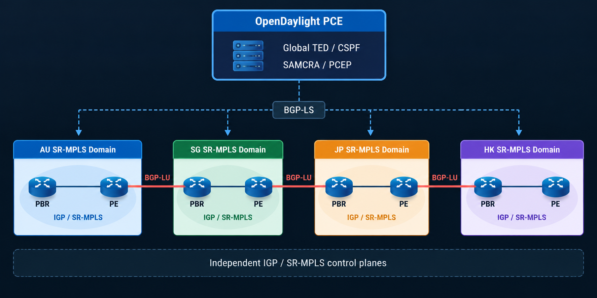

Exploring how a centralized Software-Defined Networking (SDN) and Path Computation Element (PCE) controller can perform constraint-based traffic engineering across multiple independent Segment Routing over MPLS (SR-MPLS) domains interconnected by BGP Labeled Unicast (BGP-LU).
This lab explores how OpenDaylight (ODL) can be used as a centralized topology and path-computation platform for constraint-based traffic engineering across multiple independent SR-MPLS domains.
The objective is not to build a production-ready global controller. The purpose of the experiment is to understand how topology information, traffic-engineering metrics, Segment Routing information and inter-domain BGP-LU forwarding can be combined to calculate an end-to-end constrained path.
The test environment contains four regional SR-MPLS domains: Australia, Singapore, Japan and Hong Kong.
Each region contains Provider Edge (PE) routers and Provider Border Routers (PBRs). The PBRs act as the inter-domain boundary routers and provide BGP Labeled Unicast (BGP-LU) connectivity between otherwise independent regional SR-MPLS domains.
Within each region, PE and PBR routers participate in the local Intermediate System to Intermediate System (IS-IS) routing domain and SR-MPLS control plane.
Between regions, the PBRs exchange labelled reachability using BGP-LU. This allows each regional SR-MPLS domain to remain operationally independent while still providing inter-domain MPLS forwarding.

The architecture deliberately keeps every region as an independent Interior Gateway Protocol (IGP) and SR-MPLS domain.
The regional networks are not merged into a single global IS-IS domain. Instead, BGP-LU is used between Provider Border Routers to provide labelled reachability between regions.
| Component | Function |
|---|---|
| IS-IS | Provides the Interior Gateway Protocol within each independent regional domain. |
| SR-MPLS | Provides Segment Routing based MPLS forwarding inside each regional domain. |
| BGP-LU | Provides labelled reachability between regional Provider Border Routers. |
| BGP-LS | BGP Link-State exports topology and Segment Routing information from the network toward OpenDaylight. |
| OpenDaylight | Builds the global Traffic Engineering Database and performs centralized path computation. |
| PCEP | Path Computation Element Communication Protocol is used to program controller-computed paths onto participating routers. |
Each regional domain exports topology information using BGP Link-State (BGP-LS). OpenDaylight collects this information and constructs a global Traffic Engineering Database (TED).
The TED contains information such as router relationships, link metrics, Segment Routing identifiers and selected traffic-engineering attributes.
To perform global path computation, the controller requires connectivity between the independently learned regional topology graphs.
Synthetic directional WAN edges were therefore introduced into the OpenDaylight Traffic Engineering Database to represent the BGP-LU inter-domain links.
These synthetic edges are topology abstractions only. They are not treated as native SR-MPLS links and are not assigned artificial Segment Routing Adjacency SIDs.
Additional telemetry is collected to enrich the global topology with information that can be used as constraints during path computation.
WAN measurements include delay, jitter, packet loss and bandwidth information. Native regional links can also be enriched with bandwidth utilisation information collected directly from the routers.
| Metric | Purpose |
|---|---|
| IGP Metric | Traditional routing cost |
| TE Metric | Traffic Engineering path cost |
| Delay | Maximum acceptable path latency |
| Jitter | Delay variation measurement |
| Packet Loss | Path quality constraint |
| Available Bandwidth | Capacity constraint |
OpenDaylight is used to calculate paths across the combined topology using algorithms including Shortest Path First (SPF), Constrained Shortest Path First (CSPF), and the Self-Adaptive Multiple Constraints Routing Algorithm (SAMCRA).
Unlike basic shortest-path routing, the controller can evaluate multiple Traffic Engineering constraints when selecting the end-to-end path.
Changing the constraints or Traffic Engineering attributes can cause the controller to select a completely different inter-domain path.
A global path returned by the controller cannot simply be converted into one continuous SR-MPLS SID stack.
The reason is that the regional SR-MPLS domains are independent. Segment Routing information is meaningful within its corresponding domain, while inter-domain forwarding is provided by BGP-LU.
The computed global path is therefore decomposed into native SR-MPLS segments and BGP-LU transitions.
During testing, OpenDaylight calculated an end-to-end path from an Australian PE router to a Hong Kong PE router.
By changing Traffic Engineering metrics, direct WAN paths could be made unsuitable and the path computation engine selected an alternative route through Singapore.
This demonstrates that the path computation engine can evaluate the network as a global Traffic Engineering topology while still preserving the boundaries between independent SR-MPLS domains.
Path Computation Element Communication Protocol (PCEP) was used to validate controller-driven SR-MPLS path installation on Junos.
The programmed Label Switched Path (LSP) appeared on the router as an externally provisioned Segment Routing Traffic Engineering path controlled by OpenDaylight.
One of the most important observations from the experiment was the distinction between Segment Routing labels and BGP-LU labels.
For example, the controller may use an SR Node-SID to steer traffic from the ingress PE toward a selected Provider Border Router. The border router then uses a BGP-LU label to provide inter-domain forwarding toward the remote region.
The BGP-LU label must not be interpreted as an SR SID. It represents labelled BGP reachability and may be swapped as traffic crosses another BGP-LU domain.
After the controller-created path was installed, forwarding was validated directly from the routers using MPLS-aware traceroute and ICMP testing.
BGP-LS allows a controller to learn topology and Segment Routing information from multiple domains and construct a global view of the network.
However, learning a remote Node-SID does not automatically make that SID forwarding-reachable from another independent SR-MPLS domain.
In this topology, BGP-LU provides the forwarding mechanism between those independent domains. Consequently, the final forwarding behaviour is a combination of regional SR-MPLS transport and inter-domain BGP-LU label operations.
The lab intentionally maintains independent SR-MPLS domains. This creates an important architectural limitation: Node-SIDs are not automatically globally meaningful across all regions.
The controller can see the remote topology and calculate a global Traffic Engineering path, but the forwarding plane still depends on the mechanisms available at each domain boundary.
Some externally injected Traffic Engineering telemetry can also be overwritten when the BGP-LS topology provider refreshes native link objects. For this proof of concept, perfect persistence of every telemetry attribute was not required.
A possible next step is the development of a lightweight multi-domain SR controller designed specifically around this architecture.
Such a controller could collect BGP-LS information into a global topology and SID database, perform SPF, CSPF or multi-constraint path computation, compile the selected path into domain-specific forwarding instructions, and program the network using interfaces such as PCEP, NETCONF or gNMI.
A longer-term research question is whether globally coordinated Segment Routing forwarding can be achieved across independent IGP domains without depending entirely on BGP-LU for inter-domain label translation.
This experiment demonstrates a practical approach to multi-domain Constraint-Based SR-MPLS Traffic Engineering.
Multiple isolated SR-MPLS domains were represented inside a common Traffic Engineering Database. OpenDaylight was then used to calculate constrained end-to-end paths across those domains.
The resulting path was decomposed into regional SR-MPLS forwarding segments and BGP-LU inter-domain transitions, with PCEP used to validate controller-driven path programming.
| Abbreviation | Full Name |
|---|---|
| SR-MPLS | Segment Routing over MPLS |
| PE | Provider Edge Router |
| PBR | Provider Border Router |
| ODL | OpenDaylight |
| SDN | Software-Defined Networking |
| PCE | Path Computation Element |
| PCEP | Path Computation Element Communication Protocol |
| BGP-LS | BGP Link-State |
| BGP-LU | BGP Labeled Unicast |
| TED | Traffic Engineering Database |
| IGP | Interior Gateway Protocol |
| IS-IS | Intermediate System to Intermediate System |
| SPF | Shortest Path First |
| CSPF | Constrained Shortest Path First |
| SAMCRA | Self-Adaptive Multiple Constraints Routing Algorithm |
| SID | Segment Identifier |
| LSP | Label Switched Path |
| ERO | Explicit Route Object |